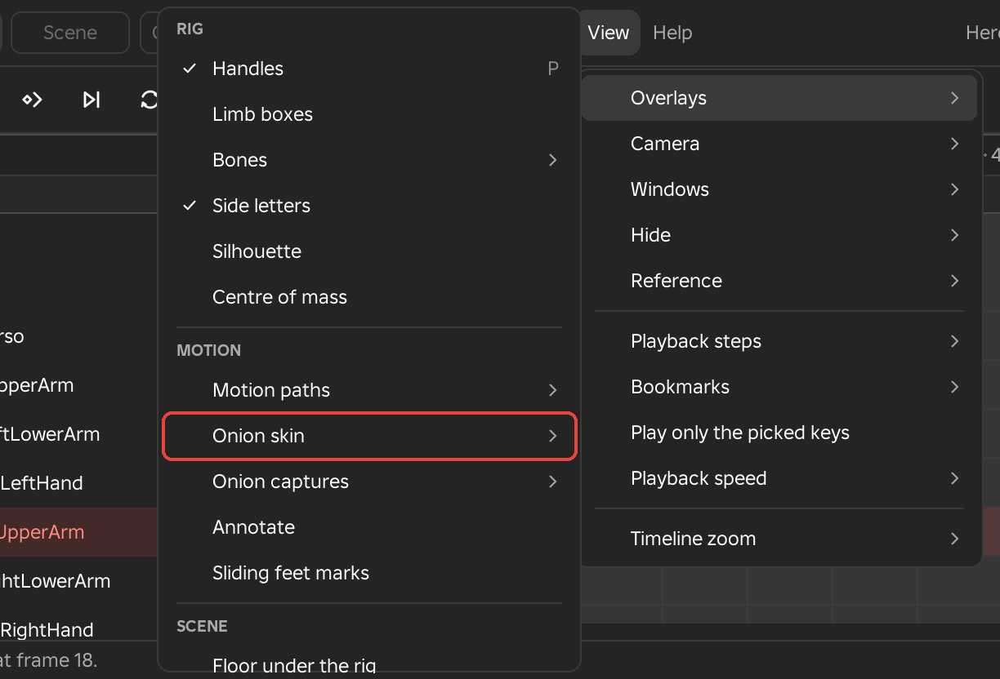

HandlesView > Overlays > RigP
Shows or hides the rings and outlines you drag to turn and move the picked limb. The row is ticked while they show.
Overlays, cameras, windows and playback settings. The Animate workspace's View menu holds them all. Scene and Game data list Floor under the rig in Overlays, then Camera, Windows, Hide, Playback speed and Timeline zoom. The toolbar's eye holds every overlay: right-click it. The eye's right-click also holds Spin check.

Shows or hides the rings and outlines you drag to turn and move the picked limb. The row is ticked while they show.
Draws a box round each limb. It is off at first: click the limb itself, and the picked one is outlined orange.
Draws each joint as a bone, from the point it turns about to the next joint. Click a bone to pick its limb; the picked one is orange. Hidden limbs draw no bone.
A skinned rig (a mesh animated through its bones) opens with Bones on, as Octahedral with X-ray, unless you changed it. Click a drawn bone, or click the skin to pick the nearest bone of that mesh. The bone under the cursor is drawn white.
seeing the joints inside big parts, armour or weapons, and picking a limb that is hard to click.
Puts letters on each face of the arms and legs, showing any twist along a limb's length.
Draws the rig in flat black.
checking a pose reads at a glance from the game's camera.
Draws a dot, a line to the floor and a disc: green when the dot is over the feet, red when the body would tip, grey in the air.
balancing a lean, a landing or a one-legged pose.
Draws the path of hands, feet, head, weapon tip or torso, a dot for each frame, and lets you reshape the motion by dragging the dots. Right-click the toolbar's Motion paths button for the same rows.
Editing the path. Press a key dot: the playhead goes to that key and its limb is picked. Drag to move the point. An IK hand or foot reaches it, other limbs turn to aim at it, and the torso path moves the root. X, Y or Z while dragging keeps the point on that world axis. Letting go keys it. Esc cancels, and Ctrl+Z undoes it.
Drag a frame dot between keys to add a key there. Shift-drag a key dot along the path to move the key to another frame. Click a key dot to show its two handles. A longer handle: the point leaves or reaches the key faster. A shorter handle: an ease. Letting go sets the easing of that span.
The path is one smooth curve through the frame samples, with small frame ticks and small key dots. A run of keys on every frame shows only its two ends. The part before the playhead is dimmed toward grey; the part after it is full.
smooth arcs on a swing, and spotting a hitch.
Edit > Preferences > Settings... > Overlays holds Frames each side (1 to 600) and Frame numbers (Off, Every key, Every 5 frames).
Shows ghosts of the key before (dark) and the key after (white), to compare poses while you work. Show onion skin turns it on. Right-click the toolbar's onion button for the same rows.
Edit > Preferences > Settings... > Overlays holds the Before colour, the After colour and Ghost strength (%). In Team Create, your onion skin shows only in your own view.
Keeps the rig as it stands as a pink ghost (up to four) that stays while you scrub and key. As with the onion skin, only the parts that differ from the rig as it stands are drawn. Right-click the onion button for the same rows. Captures are not saved.
matching a pose from earlier in the clip (the contact pose of a cycle, the guard a skill returns to), or trying a new pose against the old one.
The Apply rows are greyed until a pose is captured.
Draws lines on the 3D view. Drag to draw a line; it lies on a sheet facing the camera through the picked limb and stays with the rig when the camera orbits. Ctrl-drag or the Eraser rubs a line out. A drawing shows from its frame until the next drawn frame, or on every frame with Every frame. The bar at the top of the view has four colours, two thicknesses, Clear frame, Clear all and Done (or Esc). Ctrl+Z takes a line back. The drawings save with the animation and never reach the game.
sketching the arc a swing should follow, marking where a foot must land, or leaving a note on a frame to fix later.
Puts red marks in the events lane where a foot on the floor slides.
Draws a floor plate at the rig's feet. It is in the View menu of every workspace.
Moves Studio's view around the rig: onto a limb, onto the whole rig, to the character's front, side, top or behind, to a saved view, or along with the rig as it plays.
Shows the rigs over one flat colour in the view, in the Camera preview and in the playblast, ready to key out in a video editor. Everything else is hidden from the view only; nothing in the place changes.
filming a character for a video with a clean background to cut out.
Fog and haze are off while it shows and are put back after. Terrain cannot be hidden; the bottom line says so when the place has terrain.
Opens and closes Framez's windows, and switches the workspace. The list depends on the workspace.
Hides a limb, and the parts it carries, in Studio's view. Hide in view (H) hides the picked limb. Show only this (Ctrl+H) hides everything else. Show all (Alt+H) brings everything back; it is greyed while nothing is hidden. In a scene, Show only this rig hides the other rigs and props. A hidden limb's row shows a closed eye; click it to show the limb.
Clicks in the view skip hidden parts and pick the limb behind them. The hiding is for the view only: nothing is keyed or saved, and the game never sees it.
reaching a limb behind the torso, or watching one arm alone.
Four rows for the reference video's overlays.
Plays and scrubs the clip in steps, to judge its timing before polish. Every frame, On twos, On threes (each pose held 2 or 3 frames, from frame 0 or the play range's start) or Keys only (each Key-type key held until the next, breakdowns and generated keys skipped). Playback and scrubbing only: the keys and the save are not affected.
blocking, and judging timing on twos before polish.
Marks frames or ranges with a name and a colour, to jump between. Add bookmark here... asks for a name, a colour and, for a range, To frame. Next bookmark (Ctrl+Right) and Previous bookmark (Ctrl+Left) jump between them; both are greyed until there are bookmarks.
Bookmarks sit in a Bookmarks lane under Events, which shows when the clip has one: a flag for a frame, a flat band for a range. Click one to go there, drag it to move it, double-click to rename it. Right-click it for Rename, Colour, Play this range and Delete. They are kept with the Framez data and never reach the game clip.
marking the reference's beats (contact, hit, recover) to jump between while working.
Plays only the stretch between the picked keys, round and round. Untick it to play the whole clip.
Sets how fast Framez plays: 0.25x, 0.5x, 1x or 2x. Other speed... opens the frame count's box for any speed from 0.05x to 4x. It changes Framez's playback only: saving is not affected.
reading a fast swing frame by frame.
Zooms the timeline. Show whole timeline fits the whole clip. Zoom in and Zoom out show fewer or more frames at once.